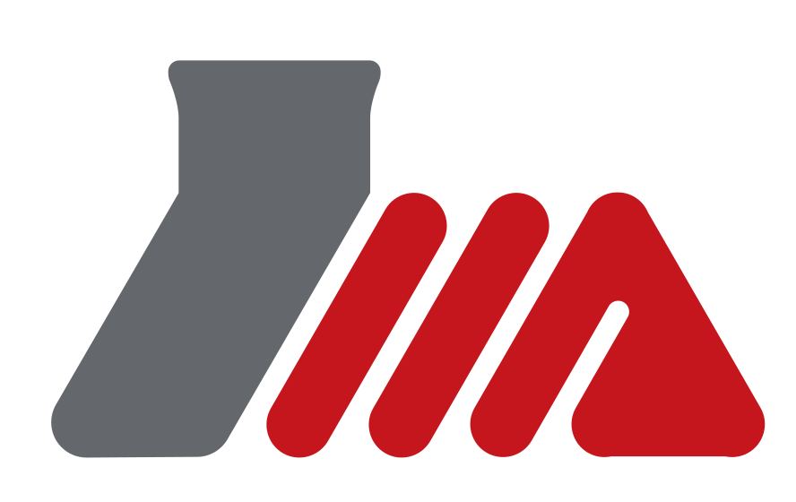
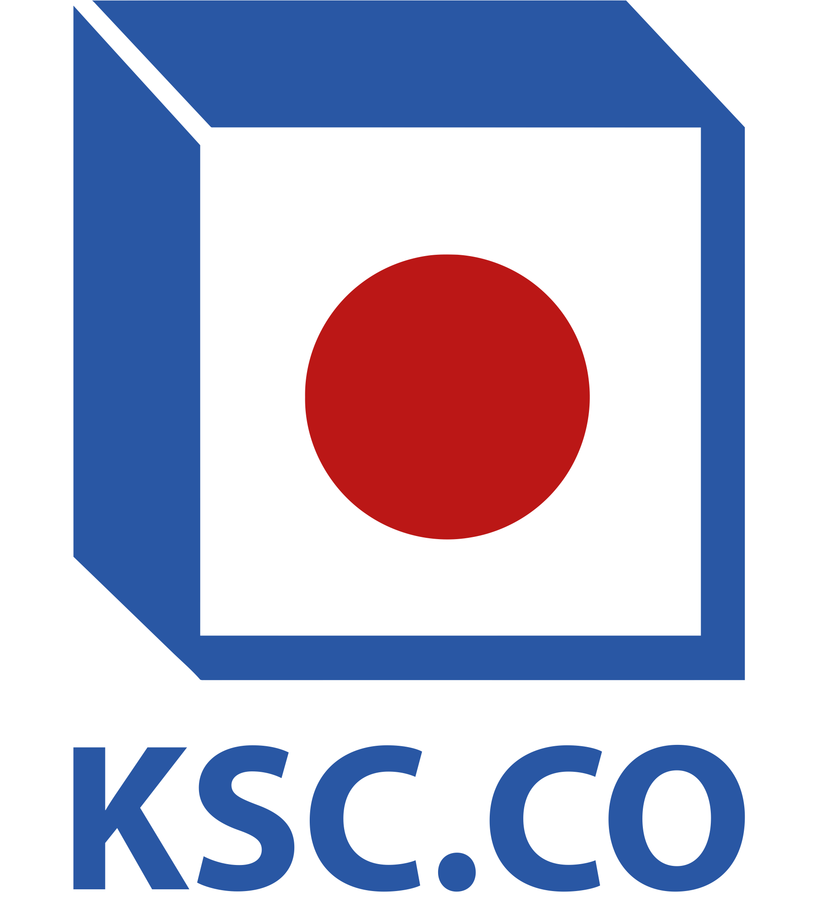

حمیدرضا مهرآبادی
Back-End Developer (Python/Django) & Quality Assurance
اطلاعات تماس
شماره تماس
محل سکونت
مشهد / نیشابور
خراسان رضوی
مهارتهای فنی
Advanced
Mid-level
Junior
Currently Learning
زبانها
انگلیسی
خواندن
75%
نوشتن
60%
مکالمه
50%
عربی
خواندن
90%
نوشتن
80%
مکالمه
50%
سوابق تحصیلی و شغلی
سوابق تحصیلی
کارشناسی مهندسی کامپیوتر
1404 - 1400
سوابق شغلی
کارشناس تست زیرساخت (Back-End)
از 1404
توسعه دهنده Python & Back-End
از 1401
کارآموز ASP.NET
1403

نیروگاه سیکل ترکیبی نیشابورکارآموز اداره آموزش
1404

مجتمع فولاد خراسانپروژهها
شرکتی
توسعه داشبورد زنده k6
گروه نرمافزاری پارت
توسعه داشبورد زنده برای نمایش نتایج تستهای عملکرد (Load Testing) با ابزار k6. قابلیت
ذخیره نتایج تستها، نمایش نمودارهای real-time، گزارشگیری CSV، مقایسه تستها و اجرای تست
از طریق CLI با لاگهای لحظهای.
{kind=link}
{kind=link}
{kind=link}
{kind=link}
در حال استفاده در تیم QA
سرویسهای زیرساخت عمومی پارت
گروه نرمافزاری پارت
مشارکت در توسعه و تست سرویسهای زیرساختی عمومی شرکت (سرویس های پرداخت، احراز هویت،
دسترسی، مدیریت فایل، پروفایل و...) که توسط پارت فریمورک به زبان JS نوشته شده اند.
در حال بهرهبرداری
گروه نرمافزاری پارت
همکاری در بخش تست و بهبود زیرساخت محصول سفته الکترونیک (آیکاپ) با استفاده از ابزارهای
K6 و تست های بار.
انجام شده
Part API Gateway
گروه نرمافزاری پارت
مشارکت در تست و بهینهسازی API Gateway داخلی شرکت برای مدیریت درخواستها، امنیت و توزیع
بار بین میکروسرویسهای مختلف.
در حال بهرهبرداری
کاری / فریلنسری
توسعه نرمافزار مدیریت پرتفوی
نرمافزار مدیریت پرتفوی با قابلیت تحلیل ریسک، بهینهسازی تخصیص داراییها و ارائه
گزارشهای زمانواقعی برای سرمایهگذاران در بازارهای مالی ایران

در حال مطالعه/توسعه
سامانه نظارت و پایش
این سامانه برای پایش دستگاههایی که به APIهای مشخصی متصل هستند، طراحی شده است.
قابلیتهای اصلی آن شامل نظارت بر شارژ دستگاهها، میزان مبلغ، اطلاعات صاحب دستگاه و وضعیت
عملکردی دستگاه میباشد.


انجام شده
سامانه تیکتینگ و نظرسنجی دانشگاه صنعتی بیرجند
سیستمی جامع برای مدیریت تیکتهای پشتیبانی و جمعآوری نظرات دانشجویان و اساتید دانشگاه.
این سامانه امکان ثبت، پیگیری و پاسخگویی به درخواستها را فراهم میکند.


در حال استقرار بر روی سرور
سایت مجموعه شهدای گمنام نیشابور
طراحی و توسعه وبسایت مجموعه شهدای گمنام نیشابور با قابلیتهایی نظیر درگاه پرداخت
کمکهای خیریه، اطلاع رسانی و اخبار، گالری تصاویر، تیکت و...


در حال استقرار روی سرور
سامانه تحلیل فرکانس
این سامانه یک بستر تحت وب میباشد که در آن کدهای خاصی که تحلیل فرکانس را برای
استفادههای صنعتی انجام میدهند، قرار گرفته است. من در این پروژه داشبورد (فرانتاند)،
سیستم احراز هویت و API ارتباطی با سیستم تحلیل فرکانس را طراحی نمودم.


انجام شده
سامانه هوشمند یادآوری بیمه
سیستم مبتنی بر فریمورک Django برای مدیریت پنل پیامکی مشتریان بیمه. این سامانه قابلیت
آپلود لیست مشتریان از فایل اکسل، محاسبه تاریخ انقضا، و ارسال خودکار پیامک یادآوری از
طریق خط اختصاصی را دارد.

انجام شده
تحصیلی
شبیهساز ماشین تورینگ گام به گام
این پروژه یک شبیهساز کامل برای ماشین تورینگ است که به صورت گام به گام عملیات را نمایش
میدهد. کاربر میتواند ماشین تورینگ خود را تعریف کرده و مراحل اجرای آن را به صورت بصری
مشاهده کند.


انجام شده
وبسایت بازاریابی دیجیتال
یک صفحه از وبسایتی برای ارائه خدمات بازاریابی دیجیتال با طراحی مدرن. این پروژه شامل
بخشهای مختلف برای معرفی خدمات، نمونه کارها، تیم و تماس با ما است.


انجام شده
بازیابی پایگاه داده - پروژه آموزشی
این پروژه به بررسی و پیادهسازی الگوریتمهای مختلف بازیابی اطلاعات در پایگاههای داده
میپردازد. روشهای مختلف بازیابی پس از خرابیهای مختلف نرمافزاری و سختافزاری
پیادهسازی شده است.


انجام شده
شبیهساز همروندی در پایگاههای داده توزیعشده
این پروژه یک شبیهساز برای الگوریتمهای کنترل همروندی در پایگاههای داده توزیعشده است.
الگوریتمهای مختلفی مانند قفلگذاری دو فازی، زمانبندی مهر زمانی پیادهسازی شدهاند.


انجام شده
سایر موارد
مدیریت تسکهای لوکال (Local Task Manager)
ابزاری تحت وب و کاملاً کلاینت-ساید برای مدیریت کارهای روزانه. این سیستم از LocalStorage
برای ذخیرهسازی دادهها استفاده میکند و دارای قابلیت ثبت تاریخچه تغییرات، فیلتر بر اساس
وضعیت و اولویت، و انتخاب تاریخ شمسی است.

انجام شده
نوتبوک پیشرفته (Advanced Notebook)
یک اپلیکیشن تحت وب (PWA) برای مدیریت یادداشتها و تسکها. شامل قابلیتهای پیشرفتهای
مانند همگامسازی ابری با سرویس JSONBin، پشتیبانی کامل از تاریخ شمسی، تم تاریک/روشن.

انجام شده
پاکساز کامنتهای کد (Code Comment Stripping Tool)
یک ابزار دسکتاپ قدرتمند نوشته شده با Python و Tkinter برای حذف کامنتها از فایلهای کد.
از زبانهای متعددی پشتیبانی میکند و دارای قابلیت Dry Run و ایجاد فایلهای پشتیبان.

انجام شده
داشبورد مدیریت لینک (Quick Links Dashboard)
داشبوردی مدرن و سریع برای ذخیره و دسترسی به لینکهای پرتال و روزمره. امکان ایجاد
دستهبندیهای رنگی، جستجوی آنی، بکآپگیری از دادهها و مدیریت آسان لینکها.

انجام شده
جداکننده و ترکیبکننده فایلهای HTML/CSS/JS
این ابزار کاربردی برای جدا کردن فایلهای HTML، CSS و JavaScript از یکدیگر و همچنین ترکیب
چندین فایل از هر نوع در یک فایل واحد طراحی شده است.

انجام شده
مدیریت وایفای
این ابزار برای مدیریت شبکههای وایفای در سیستمعامل ویندوز طراحی شده است. میتوان
شبکههای موجود را اسکن کرد، به آنها متصل شد و اطلاعات شبکههای ذخیره شده را مشاهده کرد.

انجام شده
سرور ارسال فایل لوکال (LAN File Share Tool)
ابزار اشتراکگذاری فایل و پوشه در شبکه محلی (LAN) با استفاده از Python و HTTP Server.
دارای رابط گرافیکی (Tkinter) و حالت خط فرمان (CLI). مناسب برای انتقال سریع فایل بین
دستگاههای یک شبکه بدون نیاز به اینترنت.
{kind=link}
انجام شده
اکستنشن Time Duration Calculator
افزونه مرورگر برای محاسبه اختلاف زمان بین دو ساعت و امکان کپی آن.مناسب و طراحی شده برای
Time Spent در گیت لب.
{kind=link}
انجام شده
افتخارات و سوابق علمی - پژوهشی
داور، منتور و پشتیبان فنی اولین رویداد CTF استان خراسان جنوبی
دبیر دومین مسابقه ICPC دانشگاه صنعتی بیرجند
مقام اول مسابقات تولید نرم افزار دیجیتال استان خراسان جنوبی با عنوان زرین کشت
مقام اول مسابقات بازیسازی کنگره 2400 شهید استان خراسان جنوبی
معاون اجرایی اولین بوتکمپ هوش مصنوعی و تحول کسب و کار استان خراسان جنوبی
تسهیلگر بوتکمپ هوش مصنوعی در تولید محتوا استان خراسان جنوبی
سردبیر و عضو هیئت تحریریه نشریه سمیکالن برگزیده جشنواره نشریات استان خراسان جنوبی
نائب دبیر انجمن علمی مهندسی کامپیوتر دانشگاه صنعتی بیرجند
عضو هیئت تحریریه پادکست تک تاک انجمن علمی مهندسی کامپیوتر دانشگاه صنعتی بیرجند
دانشجوی برتر فرهنگی دانشگاه صنعتی بیرجند
تدریس یار درس مبانی کامپیوتر و برنامهنویسی
اهداف من
افزایش تجربه به سنیور در Django
افزایش تجربه توسعه Front-End
تجربه عملی در OWASP Top10
افزایش تجربه در تست نویسی وب
مهارتهای نرم
تفکر تحلیلی و انتقادی
کار تیمی و رهبری تیم
تاکید بر زمانبندی دقیق
برنامهریز
مسئلهمحور
مهارتهای سخت
آشنایی با مفاهیم برنامهنویسی
آشنایی با مفاهیم شیگرایی و الگوریتمها
تست نرم افزار
توانایی تحلیل نیازمندیها، طراحی سیستم و مستندسازی فنی
آموزش، تولید محتوا و برگزاری رویداد
آشنایی با متون تخصصی رشته
آخرین بهروزرسانی: فروردین ۱۴۰۴
×